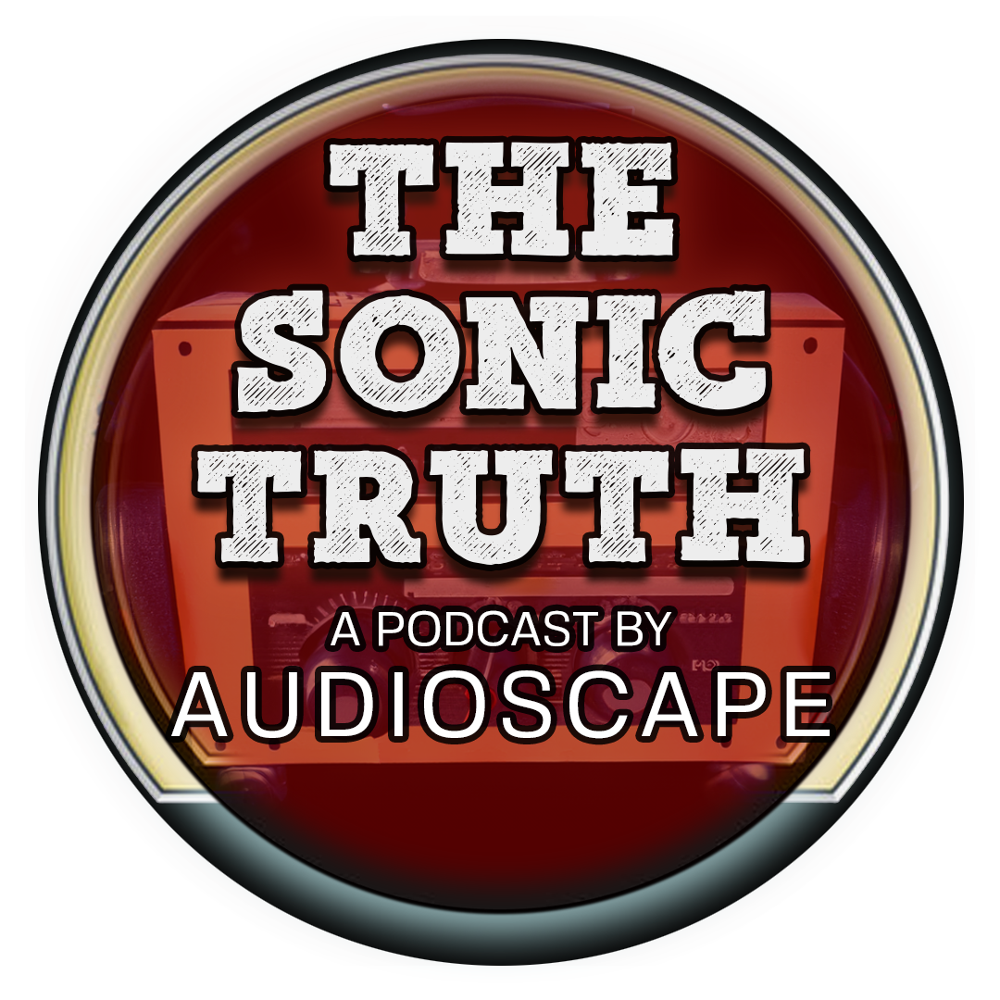
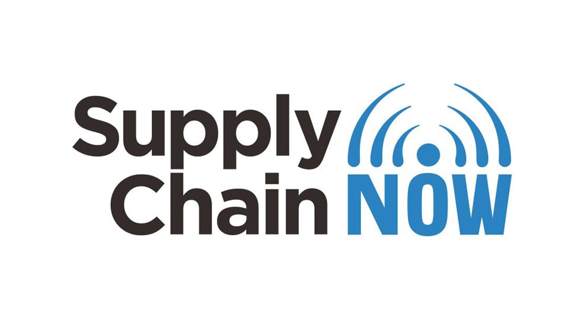
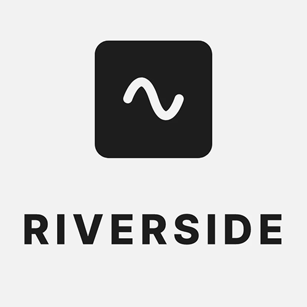
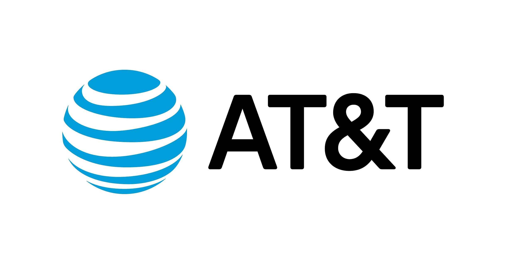
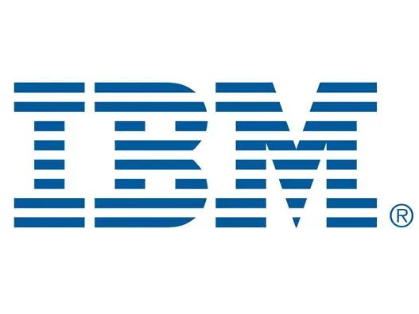
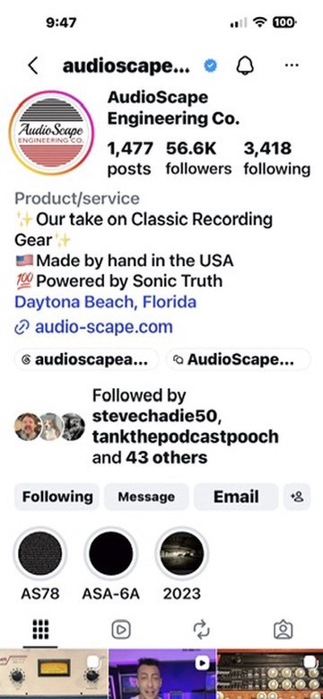

CREATIVE • TECHNICAL • STORY-DRIVEN
Have A
Creative Day
Creative marketing executive with 15+ years of experience leading digital media, content production, branding, social media strategy, podcast production, video production, and technology initiatives.
Podcast Production
Recording · Editing · Mixing · Dialogue Cleanup · Video · Clips · Publishing
Graphic Design
Branding · Social Graphics · Thumbnails · Marketing Materials
Video Production
Multi-Camera · Editing · Interviews · Motion Graphics · YouTube Content
Digital Marketing
Social Media · Content Strategy · Brand Development · Campaigns
Production & Recording
Digital Marketing
Podcast Producer
First 30 Days

PODCASTS
The Sonic Truth Podcast
A long-running podcast I produced for five years, featuring in-depth conversations with top audio professionals, producers, musicians, and industry leaders.
- Audio & video production
- Editing, mixing & dialogue cleanup
- Social clips & content strategy
- Guest coordination & publishing
- Graphic Design
PODCASTS
Supply Chain Now
I produced podcasts for Supply Chain Now for two years, featuring conversations with supply chain leaders from across the globe.
- Audio & video production
- Editing, mixing & dialogue cleanup
- Social clips & content strategy
- Graphic Design

VIDEO
Video that feels as good as it sounds.
Multi-camera interviews, podcast video, corporate content, YouTube programming, short-form clips, graphics, and post-production.
YOUTUBE MANAGEMENT
Turning content
into audience.


- Managing channel content and publishing schedules
- Conducting keyword research for video optimization
- Writing SEO-friendly titles, descriptions, and tags
- Monitoring analytics including views, watch time, and retention
- Supporting thumbnail planning for better click-through rate
- Tracking content performance to improve audience reach
- Maintaining consistency in content strategy and channel growth
AUDIO
From clean dialogue to finished mixes.
Professional audio production built on decades of recording, studio, music, and broadcast experience. I can handle multi-mic sessions, cleanup, EQ, compression, editing, mixing, and final delivery.
TOOLS & TECHNOLOGY
Software I use to bring ideas to life.
From editing and design to remote recording and AI-assisted workflows, these are the tools I use to create and deliver polished content.
 Premiere Pro
VIDEO EDITING
Premiere Pro
VIDEO EDITING
 After Effects
MOTION GRAPHICS
After Effects
MOTION GRAPHICS
 Pro Tools
AUDIO PRODUCTION
Pro Tools
AUDIO PRODUCTION
 CapCut
SHORT-FORM VIDEO
CapCut
SHORT-FORM VIDEO

Riverside REMOTE RECORDING Canva
DESIGN & CONTENT
Canva
DESIGN & CONTENT
CLIENTS
Brands I've worked with.
Podcasts, social media, and digital marketing for companies ranging from small businesses to global brands.




ABOUT
Justin M. Daniels
CREATIVE. TECHNICAL. STORY-DRIVEN.
I'm a podcast producer, digital content strategist, video producer, audio engineer, and with 15+ years of experience spanning content creation, corporate media, podcast production, and digital marketing.
My background lets me bridge the creative and technical sides of marketing — solving problems, building workflows, and delivering polished content from concept to final release.
Let's Work TogetherGET IN TOUCH
SOCIAL MEDIA MANAGEMENT
Building brands
people want to follow.

I develop and manage social media programs that combine strong visual storytelling with consistent publishing, audience engagement, and performance-driven strategy.